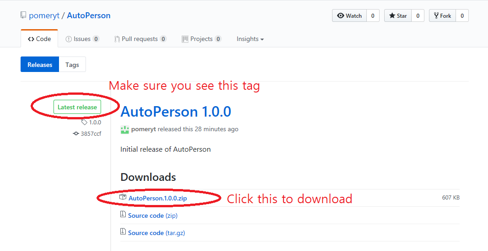

Step 1: Download a zip file from latest release.
Click
here to go to release page.
Make sure you download the latest version of zip file.

Step 2: Extract the zip file.
Step 3: Make sure AutoPerson.exe runs properly.
When you run the executable file,
script and
setting folders will be created.